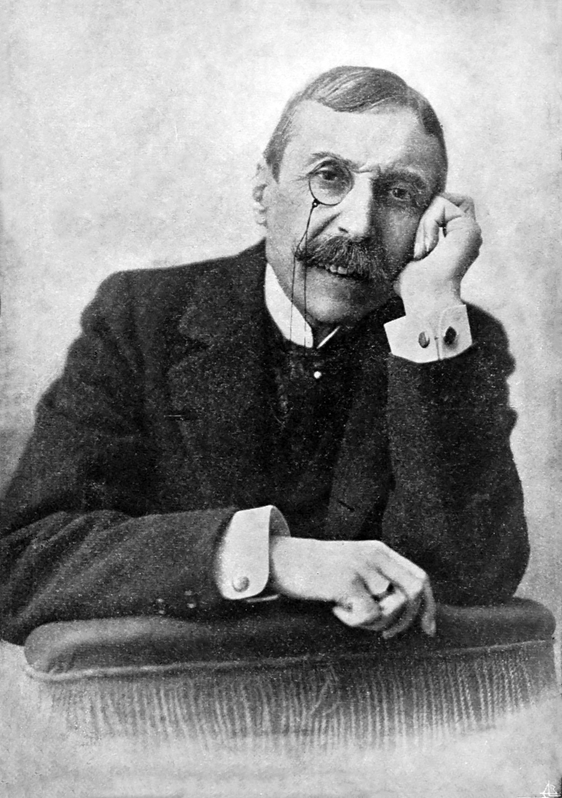

Os Meus Autores Favoritos
Eça de Queirós
Escritor português do realismo, conhecido pela sua crítica social e ironia.
Obras que gostei:
Os Maias, A Capital, A Relíquia
Opinião:
Um dos maiores nomes da literatura portuguesa.

Suzanne Collins
Autora americana conhecida por The Hunger Games.
Obras que gostei:
The Hunger Games
Opinião:
Trabalha temas como poder e sobrevivência.
Haruki Murakami
Escritor japonês de realismo mágico contemporâneo.
Obras que gostei:
Norwegian Wood, Sputnik, Meu Amor
Opinião:
Um autor único e atmosférico.